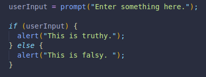
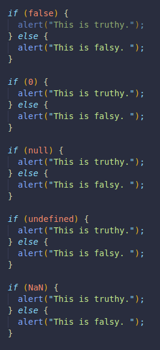

We have true and false, but we also have truthy and falsy values.
They are an inheritance they naturally have from JS.
ALL JS values are truthy... with the exception of:
Here we made a prompt for the user, if the user leaves it blank and presses enter it would be an empty string.
The if conditional below means that if userInput is true, display a message saying truthy, otherwise, one saying it is falsy.
We are checking for either an input, or an empty string, but we can check for all other types of falsy values.
These will also result in a message saying it is falsy, but if we enter any other word or number, including negative ones, they would be truthy!
